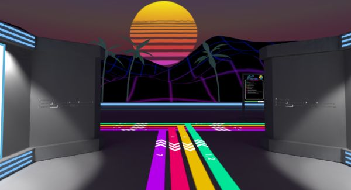

The following posters will be presented in the fast forward session on Tuesday, 20 April and in the virtual posters session on Wednesday, 21 April:
Additionally, some paper authors will give live demos of their techniques during the virtual posters session on Wednesday, 21 April. A list of these papers will be provided here shortly.
An AMD GPU will be awarded for the best student poster presentation.
You must register to attend the posters session. Posters will be a unique experience, held in a 3D VR space (but you can also use your browser), hosted using Mozilla Hubs. A 60-minute tour through the session, featuring all posters will be streamed to Youtube. Here is what last year's space looked like (album here):

All questions about posters and poster presentations should be directed to I3D 2021 Posters Chair Christoph Peters.